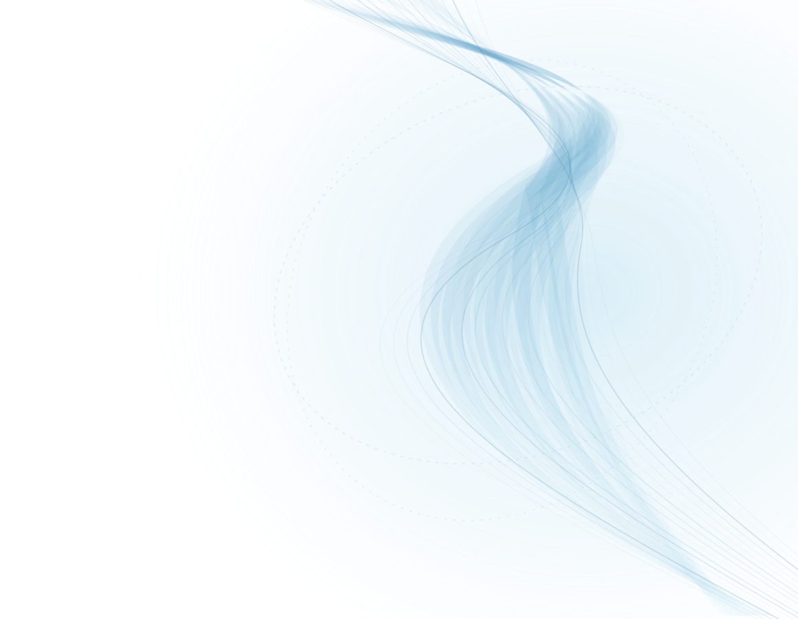

LAPELC² / PESSOAS
Pessoas
Nosso trabalho é feito por uma equipe interdisciplinar dedicada a investigar a linguagem, o cérebro e o comportamento humano, do básico ao aplicado.

02 / COORDENAÇÃO
Coordenação
A coordenação é responsável pela direção científica, pela articulação de parcerias e pelo desenvolvimento das atividades do laboratório.

03 / PESQUISADORES
Pesquisadores
Pesquisadores vinculados às atividades do LAPELC².


04 / ESTUDANTES
Estudantes
Estudantes vinculados às pesquisas desenvolvidas no LAPELC².


05 / FAÇA PARTE
Quer colaborar com o LAPELC²?
Estamos sempre abertos a novas parcerias, colaborações e estudantes interessados em integrar o laboratório.